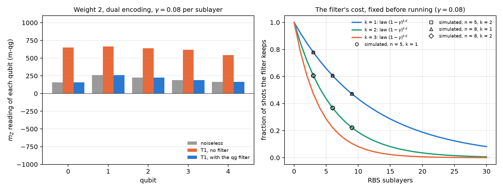
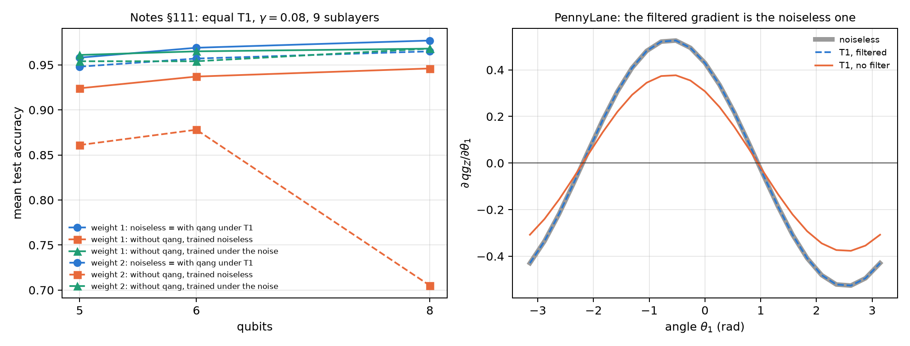

20 Weight-conserving quantum neural networks (WeightQNN)
Part VII is about quantum machine learning, and it starts with the network that fits the base of Chapter 1 best. A quantum neural network (QNN) that conserves the Hamming weight (the number of ones in the register) lives in a fixed sector, and that has two consequences. The first is good: the qg filter, which discards the shots that left the sector, makes the readout exact under T1 relaxation. The second is honest: such a network can be simulated on an ordinary computer, and cannot give a quantum advantage. This chapter reads the network in m-qg, checks its structural properties with code, and summarises the classification experiments of the notes (§75–§114), all with predictions committed before running, with and without qang.
20.1 From the base: a sector and its readings
The RBS gate (reconfigurable beam splitter) rotates the pair \(|01\rangle,|10\rangle\) by an angle \(\theta\) and leaves \(|00\rangle\) and \(|11\rangle\) alone: it is a Givens rotation, and it does not change the number of ones. In the weight-1 sector of \(n\) qubits the state is a unit vector \(u\in\mathbb R^n\), a layer of RBS gates is an orthogonal matrix, and each qubit has the reading of Chapter 1:
\[ m_Z(q)=1000\,(1-2u_q^2), \]
because \(u_q^2\) is the probability that the excitation is on qubit \(q\). The notes’ network E (§76) loads the data as amplitudes, \(v=(x_1,\dots,x_4,1)/|(x,1)|\) on 5 qubits (the constant keeps the norm of \(x\)), applies 3 layers of RBS gates (9 sublayers, 15 parameters) and reads \(z=\sum_q c_q\,qg_Z(q)+b\). Network W does the same in the weight-2 sector.
The filter under T1. T1 relaxation takes a weight-\(k\) state to weight \(k-1\) and, if every qubit has the same T1, damps all weight-\(k\) amplitudes by the same factor. Keeping only the weight-\(k\) shots then returns the noiseless distribution, exactly, for any strength (notes, §76 F1 and §78 F4). The price is known before running: the filter keeps a fraction \(K=(1-\gamma)^{k\,d}\) of the shots, with \(d\) the number of sublayers, whatever the data or the parameters (§77).
| model | max \(\lvert\)filtered − noiseless\(\rvert\) | mean \(\lvert\)raw − noiseless\(\rvert\) | simulated \(K\) | \((1-\gamma)^{kd}\) | bias with unequal T1 | bias with dephasing |
|---|---|---|---|---|---|---|
| E, 5 qubits, weight 1 | \(6\cdot10^{-13}\) | 211 | 0.4722 | 0.4722 | 33 | 64 |
| W pairs, 5 qubits, weight 2 | \(8\cdot10^{-13}\) | 426 | 0.2229 | 0.2229 | 45 | 75 |
| W dual with \(qg_{ZZ}\), weight 2 | \(8\cdot10^{-13}\) | 506 | 0.2229 | 0.2229 | 31 | 89 |
| E, 8 qubits, weight 1 | \(7\cdot10^{-13}\) | 132 | 0.4722 | 0.4722 | 29 | 48 |
| W ring, 8 qubits, weight 2 | \(5\cdot10^{-13}\) | 264 | 0.2229 | 0.2229 | 38 | 35 |
On the scale of Chapter 1 one sees what the noise does without the filter. A shot that decayed has one fewer one, and its qubits read \(+1000\): raw readings drift towards the north pole. In the example of Figure 20.1 (weight 2, dual encoding), the five noiseless readings lie between 157 and 260 m-qg, the raw ones under T1 between 543 and 664, and the filtered ones return exactly to 157–260. The filter does not correct what does not change the weight: unequal T1 and dephasing leave biases of 30 to 90 m-qg.

20.2 Architectures and encodings
The notes compare, on four real datasets with 4 features (iris, breast cancer, wine and digits 3 against 8), a standard QNN (A: angle encoding, Ry/Rz layers with a CZ ring) with the weight-conserving networks. The first weight-1 network (D, §75) dropped the norm of \(x\) and was the weakest (0.765). Network E, which keeps it, closes the gap (§76):
| dataset | RBF-SVM | MLP | quadratic twin | A | D | E |
|---|---|---|---|---|---|---|
| iris | 0.913 | 0.920 | 0.900 | 0.907 | 0.647 | 0.913 |
| cancer | 0.967 | 0.973 | 0.957 | 0.980 | 0.910 | 0.983 |
| wine | 0.979 | 0.990 | 0.969 | 0.964 | 0.795 | 0.985 |
| digits | 0.967 | 0.960 | 0.943 | 0.957 | 0.813 | 0.960 |
| mean | 0.957 | 0.961 | 0.942 | 0.952 | 0.791 | 0.960 |
With 60 runs per model (5 seeds × 3 splits × 4 datasets, §80), the central result is this:
| reading | E with qang | E without qang | W with qang | W without qang |
|---|---|---|---|---|
| noiseless | 0.952 | 0.922 | ||
| T1, trained noiseless | 0.952 | 0.928 | 0.922 | 0.757 |
| T1, trained under the noise | 0.952 | 0.951 | 0.922 | 0.924 |
| dephasing, trained noiseless | 0.918 | 0.792 | 0.882 | 0.656 |
- Trained on a simulator and run under T1, qang decides: +2.5 points at weight 1 [0.8, 4.1] and +16.5 at weight 2 [11.8, 21.2] (95% CI across seeds). Without the filter, W falls to 0.76 because 78% of its shots decayed.
- Trained under the calibrated noise, qang adds nothing measurable (+0.1 and −0.1 points). The network without the filter learns the decay.
- Dephasing requires training under the noise (+3.2 and +4.5 points), although the filter still removes its T1 part (+12.6 and +22.6 points when trained noiseless).
- Weight 2 cost 3 points, and the cause turned out to be the encoding, not the circuit (§87). The pair product distorts the data: its information ceiling, measured with a regression on all products of amplitudes, is 2.4 points lower. With the dual encoding, which puts \(v\) on the ring of pairs and \(u=(x^2,1)/|(x^2,1)|\) on the chords and covers all 10 weight-2 states, and with the \(qg_{ZZ}\) readout, weight 2 reaches weight 1: 0.947 = 0.947 (§90). Its gain with qang under T1 is 14 to 20 points, against 3 at weight 1.
20.3 Readouts: \(qg_Z\), \(qg_{ZZ}\) and two channels
The readout is a linear function of the sector distribution, and its rank says how much of that distribution it sees:
| sector | states | rank of the \(qg_Z\) readout | rank of \(qg_Z\) plus \(qg_{ZZ}\) |
|---|---|---|---|
| weight 1, 5 qubits | 5 | 5 | 5 |
| weight 2, 5 qubits | 10 | 5 | 10 |
At weight 1 the five \(m_Z\) readings already determine the whole distribution, and the correlations add nothing. At weight 2 the five readings see only 5 of the 10 directions, and the correlations \(qg_{ZZ}=\langle Z_iZ_j\rangle\) are needed. But rank was not the cause of the gap: with the pair encoding, adding \(qg_{ZZ}\) changed nothing (§81). Both things were needed together, an encoding that does not distort and a full-rank readout (§90).
The shots that decayed. In §81 there was one case against qang: with the pair encoding, the \(qg_{ZZ}\) readout and training under T1, the network without the filter scored 1.2 points more [0.4, 2.0], because the decayed shots still say where the excitations were. The two-channel readout (§95), which gives the classifier the filtered and the raw readings together, recovered nothing, and with 60 new runs the effect dropped to +0.5 [−0.7, 1.6] (§101). No readout trained under T1 beat the filter significantly, and with the simple readout the filter was better by 0.6 points [0.1, 1.0].
20.4 Classical simulability: no quantum advantage
In the weight-1 sector the whole network is an \(n\times n\) orthogonal matrix \(O\). With \(u=Ov\),
\[ z=\sum_q c_q\,(1-2u_q^2)+b, \]
a quadratic classifier in \(v\) that is computed in \(O(n^2)\) (§76 F2). The chapter’s script checks it: the network’s output and the quadratic twin’s agree to \(9\cdot10^{-16}\). At weight \(k\) the sector has dimension \(\binom nk\), and the network stays simulable as long as that number is manageable. That is why the notes say it plainly: on real data, the best classical model ties or beats the best QNN (§75: RBF-SVM 0.963 against 0.933 on digits), and a well-regularised quadratic twin sits within 0.3–1.6 points of E (§76). What these networks offer is robustness on noisy hardware, not quantum advantage.
20.5 Scaling and multiclass
With 5, 6 and 8 qubits and a fixed depth of 9 sublayers (§111), the filter keeps every network at its noiseless accuracy. Without it, the weight-1 loss stays at 3.1–3.4 points, but the weight-2 loss grows from 8.7 to 26.0 points: an 8-qubit weight-2 network falls from 0.965 to 0.705 (Figure 20.2, left). Training under the noise still catches up with the filter (within 0.9 points in every cell).
In the multiclass version each qubit is a class (qang.qml.MultiClassQNN, §110 and §114). With 8 qubits and 3, 5 and 8 classes of digits, the filter keeps every model exactly at its noiseless accuracy; without it, the linear-head readout loses 0.7, 15.9 and 11.1 points. Unlike at 5 qubits, training under the noise no longer fully catches up: it stays 2–3 points behind with 5 and 8 classes.

20.6 Training under noise or with the filter
If the filtered readout under T1 is the noiseless one for every parameter, so are the loss and every gradient. That is why training under T1 with the filter gives exactly the parameters of noiseless training (§77 F3: to \(5\cdot10^{-9}\) after 120 Adam steps). The script checks it in PennyLane, with Givens gates (SingleExcitation) and amplitude damping on default.mixed: the gradient of the filtered readout matches that of the noiseless circuit to \(10^{-16}\), and the gradient of the raw readout is the noiseless one multiplied by \(K=0.716393=(1-\gamma)^4\), component by component (Figure 20.2, right). At weight 1 the raw gradient is \(K\) times smaller; with many qubits the sector itself flattens the gradient (§112), with or without the filter.
20.7 The ecosystem: Qiskit, qiskit-machine-learning and PennyLane
The network does not live in NumPy only. The notes take it to three environments:
- Qiskit.
qang.interopreads the qg readings from a SamplerV2, and writes the filtered readout as a ratio of two diagonal observables, \(\langle P_wZ_i\rangle/\langle P_w\rangle\), for an EstimatorV2 (§131).qang.ibm.qnn_templatewrites the weight-1 network as one parameterised circuit of native XX+YY gates and sends a whole test set in one job (§139). - qiskit-machine-learning.
qang.qiskit_ml.qang_sampler_qnnturns the network into aSamplerQNN(§140). The notes found that qiskit-machine-learning 0.9.1 reads the measured bits at the physical positions of the layout, so a circuit measured before transpilation reads every shot as 0; qang transpiles by itself and drops the layout. - PennyLane.
qang.pennylane_gate.filtered_qg_zacts onqml.probs()withqml.math, so the filtered readout is differentiable and can be the loss of a training loop (§131). Checking it for this chapter turned up a problem in PennyLane 0.45.1: ondefault.mixed, thebackpropmode returns NaN for the jacobian ofqml.probsthroughSingleExcitation(withRYit works, and ondefault.qubittoo). The parameter-shift rule gives the right value.
qml.math also covers PennyLane’s JAX interface, but JAX is not installed in the book’s environment, and the filtered readout was not tested with it. Those two library problems and the path to JAX are proposed at the end of the book, together with the new version of qang.
20.8 The qg encoding and quantum signal processing
Encoding a feature \(x\in[-1,1]\) with \(\theta=\arccos x\) is the encoding of Chapter 1: the state has \(m_Z=1000\,x\), and the encoding angle is its qang angle (§16). Loaded \(L\) times, the model is a Chebyshev polynomial of degree \(L\) (\(\cos L\theta=T_L(x)\), checked to \(7\cdot10^{-16}\)), so \(L\) layers fit any bounded polynomial of degree \(L\) to machine precision and \(L-1\) layers do not. It is a polynomial inductive bias, not an advantage: with periodic targets angle encoding wins by 1.5 to 4.5 orders of magnitude.
The same rotation is the signal rotation of quantum signal processing (QSP), and qang.qsp builds it in qg terms (§134). As activations of a one-layer Kolmogorov–Arnold network, weighted QSP gets 179 of 189 inputs right, 182 with odd and even activations, against 185 for qang’s network E (§135–§136): the limit is the parity of the activations, not the number of phases.
20.9 What remains open
The accuracies in this chapter are those of the notes, with predictions committed before running; they were not rerun here, because the book’s environment has no scikit-learn. What was checked with code is structural: the filter’s exactness, the law of the kept fraction, the readout ranks, the quadratic twin and the gradient in PennyLane. A run of a filtered network on real hardware is missing (Chapter 21 develops the filter and Chapter 32 the execution on devices), and so is a test of the filtered readout with JAX.
20.10 Without qang and with qang
| action | without qang | with qang | difference |
|---|---|---|---|
| read the network under T1 | every reading; they drift towards the north pole (132–506 m-qg mean error) | the sector only: exact readout (\(10^{-12}\) m-qg) | in favour: exactness by construction, with equal T1 |
| know how many shots it costs | estimate the loss of each run | \(K=(1-\gamma)^{kd}\), before running | in favour: the cost depends only on depth and the calibrated T1 |
| train on a simulator and run under T1 | loses 2.5 (weight 1) and 16.5 points (weight 2) | the noiseless accuracy | in favour, decisive at weight 2 and with more qubits (26 points at 8 qubits) |
| train under the calibrated noise | catches up with the filter | the same | none measurable (±1 point); the filter saves the noise model and the noisy runs |
| unequal T1 and dephasing | — | biases of 30–90 m-qg | against if ignored: the filter does not correct them; with dephasing, train under the noise |
| gradient under T1 | \(K\) times the noiseless one | the noiseless one, exactly | in favour: the filtered readout is differentiable in PennyLane |
| quantum advantage | — | — | none: the network is a simulable quadratic classifier; classical models match it |
Balance. qang’s contribution in this chapter is not accuracy but robustness: the qg filter makes noiseless training remain valid under T1, exactly, and says in advance how many shots it costs. That gain belongs to the sector filter, and the base of Chapter 1 explains it: the shots that decay drift the readings towards the north pole. The networks are known (Landman et al. 2022), they are simulable, and with calibrated noise a noise-aware training reaches the same place without qang.
20.11 In code
import numpy as np
from qang import qml as QML
m = QML.WeightQNN(n_qubits=5, weight=2, encoding="dual", readout="zz")
rng = np.random.default_rng(0)
psi = m.encode(rng.uniform(-1, 1, size=(3, 4)))
theta = rng.uniform(-np.pi, np.pi, size=m.n_theta)
clean = m.qg_z(m.probs(theta, psi), qang=False)
noisy = m.probs(theta, psi, gamma=0.08)
np.abs(m.qg_z(noisy, qang=True) - clean).max() # ~1e-15: the filter is exact under equal T1
QML.kept_fraction(0.08, m.weight, m.depth) # 0.2229 = 0.92**18: the cost, before running20.12 Summary
- In the weight-1 sector the network is an orthogonal matrix and each qubit reads \(m_Z=1000(1-2u_q^2)\). Under equal T1 the qg filter returns the noiseless readout exactly, at a cost \(K=(1-\gamma)^{kd}\) known before running; without it, the readings drift towards the north pole.
- Trained on a simulator, the network gains 2.5 points with qang at weight 1 and 16.5 at weight 2; trained under the calibrated noise, it gains nothing measurable. The filter does not correct unequal T1 or dephasing.
- Weight 2 reaches weight 1 with an encoding that does not distort and a full-rank readout (\(qg_{ZZ}\)).
- The network is a simulable quadratic classifier: robustness on noisy hardware, not quantum advantage.
- In PennyLane the filtered gradient under T1 is the noiseless one; the check turned up two library problems (PennyLane and qiskit-machine-learning) and a path to JAX, which are proposed at the end of the book.